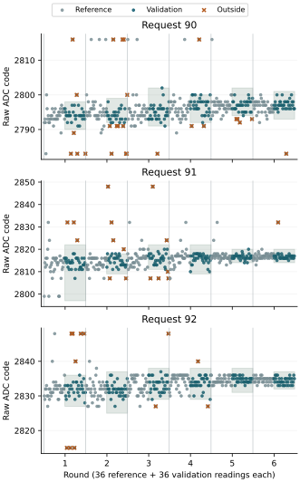
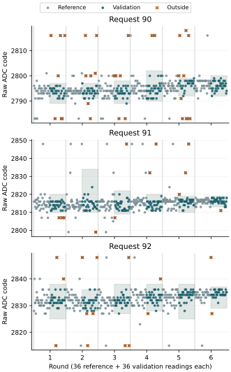

Comparison between boots
Both declared boots recovered 3888 acquisitions, eighteen complete local reference/validation holds and all 24 ordered counter windows. All restoration and release records reported success. Raw departures from the local intervals occurred at every request in both boots. Three-reading median retention remained incomplete: 214/216 inside in boot 1 and 213/216 in boot 2.
| Request | Raw departures Boot 1 → 2 | Medians inside Boot 1 → 2 | Width range Boot 1 → 2 |
|---|---|---|---|
| 90 | 32/216 → 26/216 | 70/72 → 70/72 | 6–12 → 7–11 |
| 91 | 12/216 → 16/216 | 72/72 → 71/72 | 6–24 → 6–25 |
| 92 | 15/216 → 12/216 | 72/72 → 72/72 | 8–13 → 5–12 |
Widths are upper minus lower endpoint, in raw codes. They vary between holds and boots. Request 90 had more total raw departures than 91 in both boots, but their paired differences changed sign in some rounds. Request 92 retained all local medians in both boots while still producing raw departures. These observations do not rank general electrical stability or establish six-state identity.
The repeated pattern includes reference sensitivity at request 91. A high reference triple broadened one interval in boot 1; a low reference triple broadened one in boot 2. Exact codes also recurred: request 90 retained excursions at 2783 and 2816 in both boots; request 92 retained excursions at 2815 and 2848. Code recurrence does not identify its physical or digital cause.
Boot 2 observations · Boot 1 observations · Next investigation · Complete comparison
Boot 2 observations
Preparation 96616AD20514 returned all 32700 journal sectors, with four unused reservations and no decoded journal issues. Raw departures were 26 at request 90 (19 below, 7 above), 16 at 91 (6 below, 10 above), and 12 at 92 (5 below, 7 above). Each request had 216 assessable validation readings. No local reference or validation outcome was unavailable.
Per-round departure counts were 6, 11, 1, 3, 4, 1 at request 90; 3, 6, 6, 0, 0, 1 at 91; and 8, 0, 2, 2, 0, 0 at 92. The six differences from request 91 were +3, +5, −5, +3, +4, 0 for request 90, and +5, −6, −4, +2, 0, −1 for request 92. Their signs do not support a consistent per-round ordering.
The first-round request-91 reference included 2814, 2799, 2799 at zero-based ordinals 528–530. Its median of 2799 set the lower endpoint at 2797; the full interval was 2797–2822, 25 codes wide. This widened interval does not demonstrate reduced underlying variation.

All eighteen holds in boot 2
| Round | Request | Position | Interval | Width | Raw below / above | Medians inside |
|---|---|---|---|---|---|---|
| 1 | 90 | 1 | 2790–2798 | 8 | 4 / 2 | 12/12 |
| 1 | 91 | 2 | 2797–2822 | 25 | 0 / 3 | 12/12 |
| 1 | 92 | 3 | 2827–2836 | 9 | 3 / 5 | 12/12 |
| 2 | 91 | 1 | 2809–2818 | 9 | 2 / 4 | 12/12 |
| 2 | 92 | 2 | 2825–2837 | 12 | 0 / 0 | 12/12 |
| 2 | 90 | 3 | 2792–2799 | 7 | 7 / 4 | 10/12 |
| 3 | 92 | 1 | 2829–2838 | 9 | 1 / 1 | 12/12 |
| 3 | 90 | 2 | 2791–2802 | 11 | 1 / 0 | 12/12 |
| 3 | 91 | 3 | 2811–2822 | 11 | 4 / 2 | 11/12 |
| 4 | 90 | 1 | 2792–2800 | 8 | 2 / 1 | 12/12 |
| 4 | 92 | 2 | 2829–2838 | 9 | 1 / 1 | 12/12 |
| 4 | 91 | 3 | 2809–2822 | 13 | 0 / 0 | 12/12 |
| 5 | 91 | 1 | 2814–2820 | 6 | 0 / 0 | 12/12 |
| 5 | 90 | 2 | 2794–2802 | 8 | 4 / 0 | 12/12 |
| 5 | 92 | 3 | 2831–2838 | 7 | 0 / 0 | 12/12 |
| 6 | 92 | 1 | 2832–2837 | 5 | 0 / 0 | 12/12 |
| 6 | 91 | 2 | 2814–2820 | 6 | 0 / 1 | 12/12 |
| 6 | 90 | 3 | 2793–2801 | 8 | 1 / 0 | 12/12 |
The first/last eighteen validation readings contributed 13/13 departures at request 90, 10/6 at 91 and 7/5 at 92. The later-half reduction at 91 and 92 did not recur as a common effect across both boots. Validation centres at request 90 were 19–21 codes below request 91; those at 92 were 17–18 codes above.
Boot 2 median departures
| Round / request | Raw triple | Median | Frozen interval |
|---|---|---|---|
| 2 / 90 | 2816, 2791, 2816 | 2816 | 2792–2799 |
| 2 / 90 | 2783, 2783, 2800 | 2783 | 2792–2799 |
| 3 / 91 | 2810, 2807, 2816 | 2810 | 2811–2822 |
These groups end at zero-based ordinals 1289, 1295 and 1943. In the two request-90 groups, the same extreme value appears twice and determines the median. The request-91 median is one code below its lower endpoint. No value was substituted or removed.
Boot 2 execution and evidence
All 3888 duplicate result pairs agreed and retained baseline LHLH counter order. All extra-snapshot slots remained unused. No operating guard failed. Every scheduled counter bracket contained 1.5 GHz; the combined range was 1.498854–1.501125 GHz. Per-acquisition guard estimates ranged from 1.499970 to 1.500030 GHz. These observations use the reported 54 MHz timebase and do not calibrate absolute frequency.
Acquisition took 137.703 seconds. The interval from trial entry to the final journal section was 1425.097 seconds (23 minutes 45.097 seconds). The MBR, geometry and boot files match the preparation; the two FAT copies agree. Seven sectors outside the journal differ in allocation metadata and the host-visible System Volume Information directory, without identifying the writer or time of those changes.
Return 20260927-082545 was read twice with matching SHA-256 f35049113978067585b2dd0f65bc551f62c6cd1abbc26b1cdd696bb409aee892. Eleven evidence checks cover both returned boots, their saved assessments, instruction identity, baseline reads, median departures, reference widths, every round contrast and rejection of duplicate identities or incomplete journals.
Interpretation and next investigation
Two boots establish recurrence of departures across the three nearby held requests and show that a three-reading median can retain repeated extreme observations. They also show how reference extremes change interval width. The available records do not distinguish an analog event, ADC behavior and a shared digital read-path effect. Complete diagnostics must therefore remain separate from measurement reliability.
The result-reception investigation uses a bounded trace in SEIGRASM: retain the SDA/SCL observations returned by the existing pin-driven transaction operation and independently reconstruct the received bytes alongside the original result. Its question is whether exceptional recorded words follow the sampled pin observations or arise during byte assembly or storage. Paired traced and untraced acquisitions would be needed to measure the trace's effect on timing and outcomes. Zero added wait, the operating guards and the original classification would remain the reference.
Pin observations would test the digital reception relation; they would not supply an independent analog sensor or conversion-completion witness. The two-boot comparison gives no basis for widening acceptance intervals or selecting request 91 solely from aggregate departure counts.
The returned reception comparison recovered 648 complete agreeing traces, including 38 traced validation excursions. Digital sample-to-byte agreement leaves the origin of those sampled values unresolved.
Boot 2 preparation
Preparation 96616AD20514 repeats C56292AD0ECB to assess recurrence of the request-dependent distributions, reference-width variation and within-round contrasts. All 37 instruction regions, all other nonidentity payload regions, electrical settings, acquisition order, local reference rule, guards and restoration are unchanged. Only the payload identity differs; the journal contains 32704 fresh empty reservations.
The prior 350-test validation record applies with all 126 source hashes still matching. SD installation verified 4096 write blocks and two complete readbacks, followed by recorded ejection. The prescribed powered session remains 26 minutes. This preparation supplied the completed second boot described above.
Compare each request and round in both boots, preserving raw histograms, local interval widths, median departures, positions and operating observations. Report incomplete outcomes and unavailable comparisons explicitly. Combined counts do not replace the comparison between boots, and no reference rule will be refitted to the returned validation readings.
Boot 1 results
Return 20260927-072231 recovered all 3888 acquisitions, eighteen complete local reference/validation holds and 24 ordered counter windows. The diagnostic completion criterion was met. All 648 local validation readings and 216 local validation medians were assessable. There were 59 raw departures and two median departures from their frozen local intervals.
| Held request | Raw inside / 216 | Below / above | Medians inside / 72 | Interval widths (codes) |
|---|---|---|---|---|
| 90 | 184 | 12 / 20 | 70 | 6–12 |
| 91 | 204 | 6 / 6 | 72 | 6–24 |
| 92 | 201 | 8 / 7 | 72 | 8–13 |
These are request-specific retention results. They do not constitute six-state recognition or prove independent conversion freshness. Width means upper minus lower endpoint; both endpoints are included.
Distributions and reference widths
Departures occurred at every held request. Per-round raw departure counts were 7, 7, 6, 2, 10, 0 at request 90; 3, 1, 2, 2, 3, 1 at request 91; and 3, 5, 3, 2, 0, 2 at request 92. The paired differences from request 91 were therefore +4, +6, +4, 0, +7, −1 for request 90, and 0, +4, +1, 0, −3, +1 for request 92. All six acquisition orders are retained.
Request 91's second-round reference contained the triple 2832, 2848, 2816. Its median, 2832, set the upper endpoint at 2834, widening that interval to 24 codes. Its other intervals were 6–13 codes wide. Consequently, a lower departure count cannot by itself establish that request 91 is electrically more stable. The reference observations were retained without retrospective exclusion or refitting.

All eighteen holds: position, interval and outcomes
| Round | Request | Position | Interval | Width | Raw below / above | Medians inside |
|---|---|---|---|---|---|---|
| 1 | 90 | 1 | 2789–2797 | 8 | 3 / 4 | 12/12 |
| 1 | 91 | 2 | 2810–2820 | 10 | 3 / 0 | 12/12 |
| 1 | 92 | 3 | 2825–2838 | 13 | 1 / 2 | 12/12 |
| 2 | 91 | 1 | 2810–2834 | 24 | 1 / 0 | 12/12 |
| 2 | 92 | 2 | 2828–2836 | 8 | 3 / 2 | 12/12 |
| 2 | 90 | 3 | 2791–2797 | 6 | 2 / 5 | 11/12 |
| 3 | 92 | 1 | 2827–2838 | 11 | 2 / 1 | 12/12 |
| 3 | 90 | 2 | 2789–2798 | 9 | 2 / 4 | 12/12 |
| 3 | 91 | 3 | 2809–2822 | 13 | 1 / 1 | 12/12 |
| 4 | 90 | 1 | 2790–2802 | 12 | 0 / 2 | 12/12 |
| 4 | 92 | 2 | 2828–2838 | 10 | 1 / 1 | 12/12 |
| 4 | 91 | 3 | 2811–2820 | 9 | 0 / 2 | 12/12 |
| 5 | 91 | 1 | 2810–2819 | 9 | 0 / 3 | 12/12 |
| 5 | 90 | 2 | 2792–2799 | 7 | 5 / 5 | 11/12 |
| 5 | 92 | 3 | 2825–2838 | 13 | 0 / 0 | 12/12 |
| 6 | 92 | 1 | 2829–2837 | 8 | 1 / 1 | 12/12 |
| 6 | 91 | 2 | 2813–2819 | 6 | 1 / 0 | 12/12 |
| 6 | 90 | 3 | 2792–2800 | 8 | 0 / 0 | 12/12 |
The first/last eighteen validation readings contributed 17/15 departures at request 90, 4/8 at 91 and 8/7 at 92. There was no common reduction in the later half. Validation centres at request 90 were 19–20 codes below request 91; those at 92 were 17–19 codes above. This boot therefore resolved different request-dependent centres while retaining departures on both sides of the nominal rollover region.
The two median departures
Both occurred at request 90. In round 2, acquisition ordinals 1266–1268 contained 2791, 2816, 2800: median 2800 was three codes above the upper endpoint 2797. In round 5, ordinals 3132–3134 contained 2800, 2797, 2816: median 2800 was one code above the upper endpoint 2799. Ordinals are zero-based. Neither triple contained two readings at the extreme code 2816; a moderate departure and one extreme reading were sufficient to move its median outside the interval.
The other 214 medians remained inside their local intervals. That aggregation reduced the number of departures but did not eliminate them. Changing the threshold after this return would create a new analysis rule requiring a separately declared comparison.
Execution and operating observations
All 3888 duplicate result pairs agreed, and recorded byte-completion counters retained baseline LHLH order. No additional-snapshot slot was used. All six round restorations, final restoration and pin release reported success. No operating guard failed. The 24 ordered counter brackets each contained 1.5 GHz; their combined extent was 1.498878–1.500794 GHz. Per-acquisition guard estimates ranged from 1.499970 to 1.500029 GHz. These estimates use the reported 54 MHz counter timebase and do not calibrate its absolute accuracy.
Acquisition took 137.709 seconds. The recorded interval from trial entry to the final journal section was 1425.112 seconds, or 23 minutes 45.112 seconds. Journal recovery used 32700 sectors, with four unused reservations and no decoded journal issues. The 26-minute procedure remains consistent with this observed recording duration.
Boot 1 interpretation and repeat rationale
The result weakens the hypothesis that excursions are confined to request 91 near the 2815/2816 rollover. Request 90 produced repeated validation values at 2783 and 2816; request 92 retained values at 2815 and 2848. Specific codes recur, but the evidence does not identify whether their origin is electrical, inside the ADC or in a shared digital access path.
The comparison also exposes reference sensitivity: a high reference median can substantially widen one request's interval. This makes interval width and the unfiltered distribution necessary companions to departure counts. It does not justify selecting 91 as the preferred setting or widening every interval.
A second boot repeats this balanced protocol with unchanged instructions, requests and reference rule, using a new identity and empty journal. Its question is whether the request-dependent distributions, reference-width variation and paired differences recur across boots. The present six rounds are observations within one boot, not six independent boots. Baseline read order and zero added wait remain the reference. Boot 2 preparation supplied the completed comparison.
Evidence and verification
Two read-only captures matched SHA-256 9d279f2f1072edfd98e22af147f65d943a0b0da32de07e9290ab5ff723e2252c and preparation C56292AD0ECB. Six returned-evidence checks reproduce the declared assessment, widths, exceptional medians, read ordering and counter observations, verify reference/validation separation and reject corrupt or incomplete journals.
The MBR, partition geometry and boot files match the preparation; both FAT copies agree. Seven sectors outside the journal differ in allocation metadata and the host-visible System Volume Information directory. This does not establish the writer or time of those changes.
Question and rationale
The result-consistency return retained 36 above-interval target readings at request 91. Reversing byte order did not consistently reduce excursions. All additional snapshots retained their original value, including eleven excursions; their following triggered readings returned inside their interval. The observed excursion codes were 2824, 2832, 2833 and 2848.
This comparison asks whether the raw distributions and excursions depend on the held request across 90, 91 and 92. These settings probe the neighbourhood of the observed low-byte rollover between codes 2815 and 2816. A concentration near one code region would motivate a dedicated conversion/read-path investigation; departures distributed across settings would weaken a narrowly localized explanation. Request and code region covary, so neither outcome alone distinguishes an analog disturbance from an ADC or shared read-path effect.
Acquisition protocol
Six rounds retain the preceding 216 nominal references and 216 interleaved mixed references per round. Each round then acquires three holds of 72 readings, one at each request. Orders are 90,91,92; 91,92,90; 92,90,91; 90,92,91; 91,90,92; 92,91,90. Every request occupies every position twice.
The first 36 readings in each hold form its local reference distribution. The next 36 are validation observations and cannot alter that distribution. The complete run contains 3888 acquisitions, including 648 local references and 648 local validation readings. Each request supplies 216 local references, 216 validation readings and 72 nonoverlapping validation medians.
All reads use the baseline LHLH result-byte sequence, the original 10-microsecond minimum GPIO dwell, zero added acquisition wait and 1 ms pre-ADC settling. There is no result-read padding, byte-order reversal or additional snapshot group. The original ADC reset, trigger, status, duplicate result-pair and cleanup sequence remains. Voltage-control selection checks the current setting and writes only when a change is needed. Requests remain within 90–105, and operating limits and restoration remain unchanged.
Control numbers, raw ADC codes and counts in this account are decimal. They are experimental settings and observations; they do not change SEIGRASM's default numeral system.
Declared assessment
For each of the eighteen holds, partition its first 36 readings into twelve successive triples and calculate their medians. Freeze the local interval at [minimum median − 2, maximum median + 2]. Both endpoints are included. A failed or missing reference reading makes that hold's interval unavailable; no remaining subset replaces it. An invalid lower bound also makes the interval unavailable.
Assess every later raw value and each of the twelve later triple medians against that interval. Report inside, below, above and unavailable counts separately. A failed member makes its validation median unavailable; unavailable outcomes remain in the planned denominators. These categories describe retention within a request-specific distribution, not six-state identity.
Preserve reference and validation values, full code histograms, interval widths, centres, ordered trajectories, result octets and actual read counters. Reference excursions may widen an interval and conceal later departures in an interval count; therefore counts must be interpreted together with the unfiltered reference distribution. Neither repeated familiar codes nor a preselected bit pattern defines an excursion.
For 90 and 92, retain all six within-round differences from 91 in raw excursion counts and validation centres, with block position. Also report positions and early/late validation observations so that drift or hold-entry effects remain visible. Unavailable comparisons are not treated as zero. No filtering, retry, target-driven calibration or retrospective threshold adjustment is permitted.
The diagnostic completion criterion requires 3888 valid acquisitions, eighteen complete local reference/validation holds, all 24 scheduled counter windows and successful restoration. It does not require zero excursions and does not constitute an analog-accuracy or six-state-recognition criterion. Agreement across requests is not an equivalence test; this single boot estimates descriptive patterns for a subsequent confirmatory question.
Operating observations
The original operating guard precedes every sample. The existing ordered 1 ms counter windows remain at round-relative ordinals 0, 216, 432 and 647. They follow a successful guard and precede subsequent PMIC access. A frequency guard stop retains its original report and invokes at most the existing 1 and 10 ms diagnostic windows before restoration. Thermal or timebase failures skip those windows. A failed added window stops further sampling. No guard result is relaxed or replaced.
No independent timebase, external analog sensor or conversion-completion witness is introduced. Added counter windows remain part of the workload; their estimates do not reconstruct the earlier guard interval.
Execution and recording
The SEIGRASM acquisition operation gains selector 7 for the balanced held-request schedule. The observation operation gains a baseline-only policy that suppresses alternate read orders and extra snapshots while retaining its guard and recording paths. Existing selectors and policy zero retain their prior behavior.
Configuration schema 23 identifies this protocol. Section 9 retains its existing 1744-word layout: its planned-snapshot count is zero and the 432 unused snapshot slots must remain zero. Counter slots retain their identities. The journal occupies at most 32700 of 32704 reserved sectors; its geometry is unchanged.
Processor execution uses the literal AArch64 instruction words in those SEIGRASM operations and their existing electrical, timing and SD delegates. PC image packaging places those instructions and contexts without compiling the target from another language. Existing boot firmware still provides initial entry and hardware state.
The native six-state calibration and recognition records remain as apparatus context and are independently reconstructed. They do not define acceptance for these three requests. The PC evidence assessment reconstructs the declared local intervals from physically recorded references. This is an analysis rule, not a newly implemented Hyphos classifier. Execution and recovery checks cover the complete request schedule, baseline policy, frozen-reference separation and native journal recovery after failure.
Run duration
The established 26-minute powered session is retained. The previous full return reached its final journal section after 23 minutes 50.717 seconds. This protocol adds no journal sectors and removes extra result reads. Returned counters will establish its actual execution duration.
Preparation
Preparation C56292AD0ECB supplied this completed run. All 350 software execution and evidence checks passed without skipped tests or source changes during validation. The 64 MiB image was verified in 4096 write blocks and two full readbacks, followed by recorded media ejection. The frozen pre-acquisition protocol remains in its preparation archive.
Preparation and parameters · Instruction comparison · Software validation · SD verification